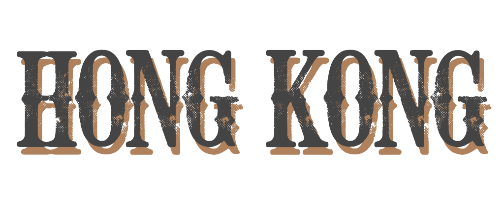

DISNEYLAND
Hong Kong Disneyland opened in 2005, as the second Disney park in Asia. At 68 acres it is the smallest Disneyland to date. Like the original in California, it is made up of seven lands: Adventureland, with its river cruise; Fantasyland with its a Small World and Sleeping Beautyss Castle; the Wild West-themed Grizzly Gulch; Mystic Point; Tomorrowland with Hyperspace Mountain, Iron Man and Star Wars rides; Toy Story Land; and Main Street USA.
OCEAN PARK
Aside from the sights and the food, a lot of tourists also go to Hong Kong usually to shop or go to a theme park or both. One of the most popular attractions in Asia’s World City is Ocean Park Hong Kong where nature appreciation and entertainment is rolled into one. A favorite of families, couples, and friends!
Masses in this church are held in Filipino, Mandarin, Hokkien, and English. At the foot of Jones Bridge, albeit controversial, sits the world’s largest Chinatown arch standing at 63.8 feet high and 74 feet wide. It was inaugurated in 2015 to promote and rehabilitate Binondo, just in time for Manila Day celebrations.

HONG KONG DISNEYLAND/ HONG KONG OCEAN PARK
Day 1
• Arrive HK airport, transfer to hotelbased on the following schedules:
• Arrival ETA 06:00-21:30 (earliest coach leaves at 9am)
DAY 2
• Breakfast outside hotel (please make sure you are done with
this before tour pick-up), compulsory halfday HK city tour
• 1/2 Day Hong Kong Tour
• Victoria Harbour (when Garden of Stars is not available)
• Guide will collect tip HKD50 each payable when there
• then proceed to chosen FREE tour
DAY 3
• Breakfast outside hotel
• Tour to Hong Kong Disneyland
DAY 4
• Breakfast outside hotel
• Tour to Hong Kong Ocean Park